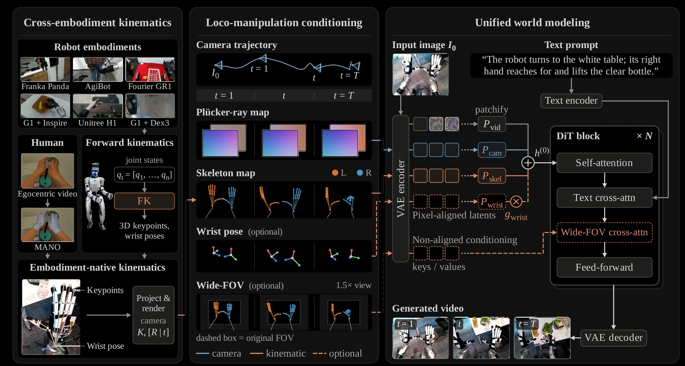
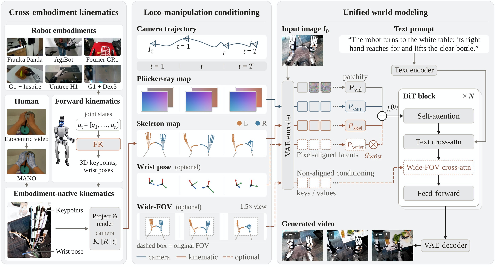
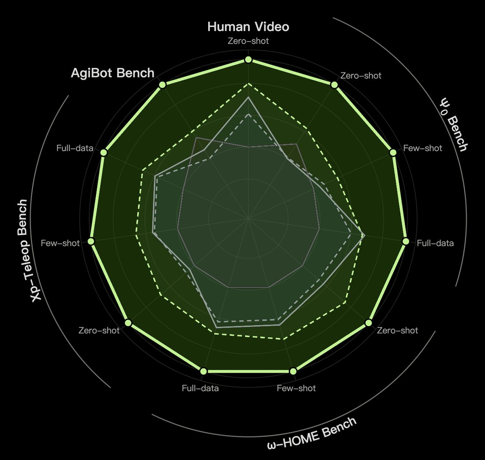
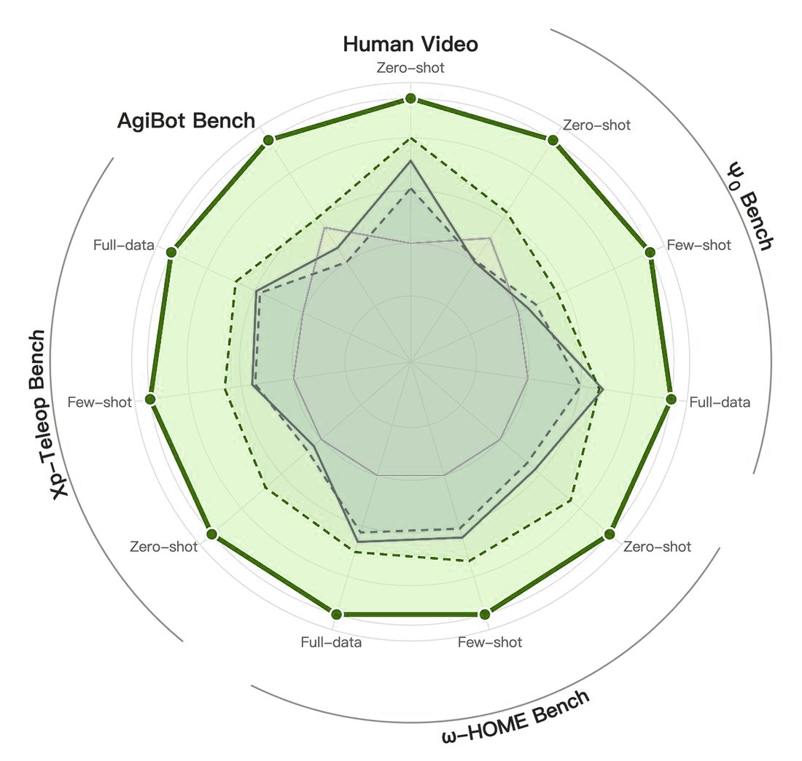

00Overview
Learn loco-manipulation
across embodiments
from human experience.
Ropedia W0 is the first egocentric loco-manipulation world foundation model spanning humans and robots with diverse embodiments. It encodes locomotion as camera poses and manipulation as projected skeletons, one kinematic interface shared by humans and robots.
01Data
Curate Xp-Data: 10k hours of human
and 3k hours of robot data
with multimodal annotations.
Public egocentric datasets are limited in scale and uneven in quality: many lack metric camera trajectories, have noisy or missing hand poses, or use incompatible formats. Xp-Data puts every clip in one schema, with synchronised egocentric RGB, camera trajectory, manipulator skeleton and caption.
- AnnotationLabel with humans in the loop
Automated models annotate each clip; targeted human checks ensure quality.
- Public dataRe-annotate public data
14 human and 13 robot datasets, unified in one schema.
- Our recordingsRecord our own
6,000+ hours of multi-view egocentric video from a four‑fisheye rig.
- BenchmarkBuild Xp-Teleop
Whole-body dexterous humanoid teleoperation in six household activity groups, for long-horizon evaluation.
02Model
Unify loco-manipulation across embodiments
with one kinematic interface.
Ropedia W0 is a latent video diffusion model that generates future egocentric video from the first frame, a text prompt and actions (two kinematic signals). Action signals are explicit and pixel-aligned with the video, so they are easy to learn, and since any human or robot body can be rendered in the same format, they transfer across embodiments.
- LocomotionCamera poses
Relative to the first frame, as dense Plücker-ray maps; every step and turn moves the view.
- ManipulationProjected skeletons
Hand keypoints projected into each frame, from pose annotations for humans and forward kinematics for robots.
- ScaleTwo model scales
A dense 5B model and A14B, a mixture-of-experts with 14B active parameters.
- TrainingFrom humans to robots
Human pre-training, then human–robot mid-training; optional post-training on a target robot.


03Scaling
The more human experience,
the better the world model.
With the post-training recipe fixed, we vary how much human video goes into pre-training, up to about 10k hours.
- HumanBetter human prediction
Camera and hand following improve steadily as human pre-training grows.
- RobotBetter robot prediction
The gains carry over to robot prediction across embodiments.
Human video evaluated on held-out human clips
Robot evaluated on robot benchmarks
04Performance
Predict loco-manipulation more faithfully,
across embodiments and data regimes.
- BenchmarksLead across benchmarks
State of the art on human video and every robot benchmark, from zero-shot to full-data post-training.
- BaselinesOutperform Cosmos 3
Matches the ground truth more closely than both Cosmos 3 models, including the larger Cosmos 3-Super.
- EmbodimentsCover many embodiments
Humans, gripper arms and dexterous humanoids, steady as the body walks and turns.
- Long horizonLead on long rollouts
Stays ahead of the baselines over long rollouts that chain locomotion and manipulation.
Lead across benchmarks
Quantitatively, Ropedia W0 leads on held-out human video and five robot benchmarks (DreamDojo, Ψ0, ω-HOME, AgiBot and our Xp-Teleop), from zero-shot to full-data post-training; on DreamDojo's own protocol, it leads at every data budget.
- DreamDojo (2B)
- DreamDojo (14B)
- Ropedia W0 (5B)
- Ropedia W0 (A14B)


- Ropedia W0 (A14B)
- Ropedia W0 (5B)
- Cosmos 3-Nano (16B)
- Cosmos 3-Super (64B)
- DreamDojo (14B)
Ropedia W0 (A14B) is the outermost line on every axis.
Compare with state-of-the-art world models
Qualitatively, given the same input frame and actions, Ropedia W0 stays closer to the ground truth than Cosmos 3.
One model, many embodiments
A shared kinematic action space lets one model predict humans, gripper robots and dexterous humanoids, with consistent scenes under locomotion.
Predict over long horizons
Long autoregressive rollouts chain locomotion and manipulation, each generated from a single real frame and the commanded actions.
05Applications
Serve as a world simulator.
Evaluate, plan, teleoperate and learn.
Rollouts imagined by Ropedia W0 stand in for costly real-world trials, as validated in simulation and on physical robots.
- r ≥ 0.98Policy evaluation
Correlation between imagined and real task progress; the checkpoint ranking is preserved.
- +7 / +10 ppPlanning
Over the best single checkpoint, in simulation / on a real robot, by planning in imagination.
- 21.3 fpsReal-time teleoperation
640×480 video streamed on one GPU by a 4-step distilled model, for live VR control.
- 33.3 → 56.7%World–action models
Real Unitree G1 task progress: FastWAM vs. FastWAM initialised from Ropedia W0.
Evaluate and plan in imagination
As a proxy environment, Ropedia W0 ranks policy checkpoints in the same order as real runs (MMRV = 0). For planning, it imagines candidate action sequences, a value model scores them, and the best one is executed.
Teleoperate live in VR
Distilled into a 4-step autoregressive model, Ropedia W0 streams 640×480 video at 21.3 fps on one GPU and stays stable for minutes. An operator in a Quest 3 headset moves, and the model renders what a human or robot body would see.
Learn better policies
Initialising the video backbone of a world–action model (FastWAM) from Ropedia W0 5B, with everything else unchanged, raises held-out LIBERO-Plus success from 50.1% to 56.8% and helps every few-shot setting. On a real Unitree G1 the resulting policy reaches 56.7% task progress, against 33.3% for FastWAM; its executions are shown below.
Reference
Citation
BibTeX
@article{liu2026ropedia,
title={Ropedia W0: Scaling Loco-Manipulation World Models across Embodiments with Human Experience},
author={Liu, Tianqi and Zhao, Hanfei and Liang, Qifeng and Pang, Hui En and Xu, Jiarui and Mu, Sayang and Qiu, Penghao and Zhang, YingSheng and Wang, Jun and Cao, Ziang and Sun, Mingze and Cao, Yukang and Hong, Fangzhou and Chen, Zhaoxi and Liu, Ziwei},
journal={Technical report},
year={2026}
}